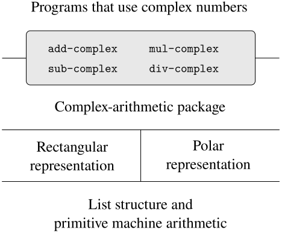
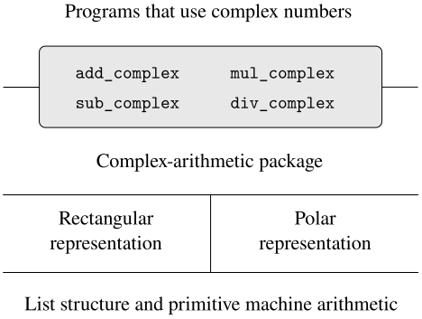

We have introduced data abstraction, a methodology for structuring systems
in such a way that much of a program can be specified independent of the
choices involved in implementing the data objects that the program
manipulates. For example, we saw in
section 2.1.1 how to separate the task of
designing a program that uses rational numbers from the task of implementing
rational numbers in terms of the computer language's primitive
mechanisms for constructing compound data. The key idea was to erect an
abstraction barrier—in this case, the selectors and constructors for
rational numbers
(make-rat,
(make_rat,
numer,
denom)—that isolates the way rational
numbers are used from their underlying representation in terms of
list
linked-list
structure. A similar abstraction barrier isolates the details of the
procedures
functions
that perform rational arithmetic
(add-rat,
(add_rat,
sub-rat,
sub_rat,
mul-rat,
mul_rat,
and
div-rat)
div_rat)
from the higher-level
procedures
functions
that use rational numbers. The resulting program has the structure shown
in figure 2.2.
These data-abstraction barriers are powerful tools for controlling
complexity. By isolating the underlying representations of data
objects, we can divide the task of designing a large program into
smaller tasks that can be performed separately. But this kind of data
abstraction is not yet powerful enough, because it may not always make
sense to speak of the underlying representation
for a
data object.
For one thing, there might be more than one useful representation for a data object, and we might like to design systems that can deal with multiple representations. To take a simple example, complex numbers may be represented in two almost equivalent ways: in rectangular form (real and imaginary parts) and in polar form (magnitude and angle). Sometimes rectangular form is more appropriate and sometimes polar form is more appropriate. Indeed, it is perfectly plausible to imagine a system in which complex numbers are represented in both ways, and in which the procedures functions for manipulating complex numbers work with either representation.
More importantly, programming systems are often designed by many people working over extended periods of time, subject to requirements that change over time. In such an environment, it is simply not possible for everyone to agree in advance on choices of data representation. So in addition to the data-abstraction barriers that isolate representation from use, we need abstraction barriers that isolate different design choices from each other and permit different choices to coexist in a single program. Furthermore, since large programs are often created by combining pre-existing preexisting modules that were designed in isolation, we need conventions that permit programmers to incorporate modules into larger systems additively, that is, without having to redesign or reimplement these modules.
In this section, we will learn how to cope with data that may be represented in different ways by different parts of a program. This requires constructing generic proceduresfunctions—proceduresfunctions that can operate on data that may be represented in more than one way. Our main technique for building generic procedures functions will be to work in terms of data objects that have type tags, that is, data objects that include explicit information about how they are to be processed. We will also discuss data-directed programming, a powerful and convenient implementation strategy for additively assembling systems with generic operations.
We begin with the simple complex-number example. We will see how
type tags and data-directed style enable us to design separate
rectangular and polar representations for complex numbers while
maintaining the notion of an abstract
complex-number
data object.
We will accomplish this by defining arithmetic
procedures
functions
for complex numbers
(add-complex,
(add_complex,
sub-complex,
sub_complex,
mul-complex,
mul_complex,
and
div-complex)
div_complex)
in terms of generic selectors that access parts of a complex number
independent of how the number is represented. The resulting complex-number
system, as shown in
figure 2.28,
figure 2.29,
contains two different kinds of
abstraction barriers. The horizontal
abstraction barriers
play the same role as the ones in
figure 2.2. They isolate
higher-level
operations from lower-level
representations. In addition, there is a vertical
barrier
that gives us the ability to separately design and install alternative
representations.
| Original | Python | |
|

Figure 2.28
Data-abstraction barriers in the complex-number system.
|

Figure 2.29
Data-abstraction barriers in the
complex-number system.
|
In section 2.5 we will show how to
use type tags and data-directed style to develop a generic arithmetic
package. This provides
procedures
functions
(add, mul, and so
on) that can be used to manipulate all sorts of numbers
and
can be easily extended when a new kind of number is needed. In
section 2.5.3, we'll show how to
use generic arithmetic in a system that performs symbolic algebra.